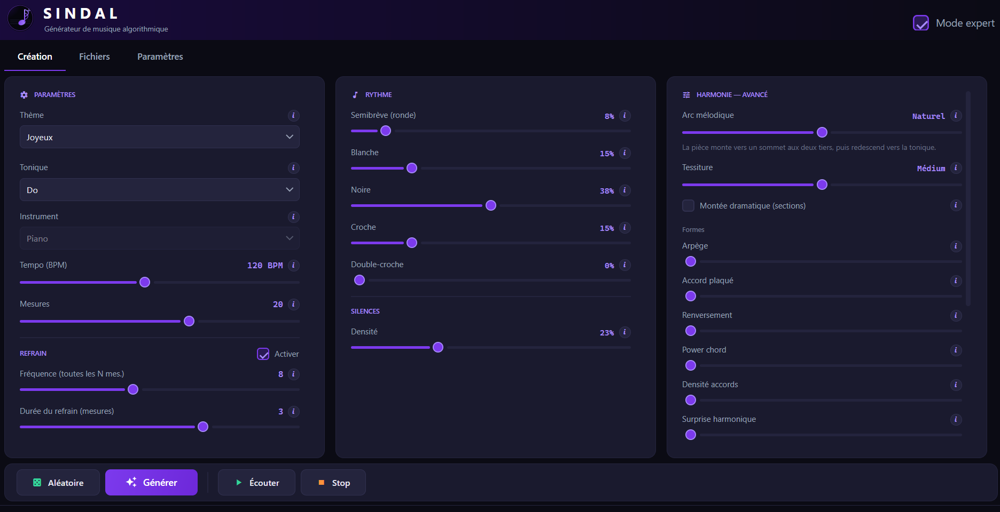

🎼
La musique est à vous
Pas d'abonnement, pas de clause sur ce que vous en faites. Les fichiers atterrissent sur votre disque, dans des formats ouverts.
Générateur de musique pour piano
Choisissez un thème, une tonique, un tempo. Sindal écrit la partition, vous écoutez, vous retouchez ce qui ne va pas. Tout se passe sur votre ordinateur.
GratuitSans compteHors ligneWindows et macOS
Pourquoi Sindal
Sindal n'a rien appris sur de la musique existante. Il compose comme on l'apprend au conservatoire : gammes, accords, conduite des voix, cadences. Le résultat ne copie personne, et aucune œuvre n'a servi à l'entraîner.
Pas d'abonnement, pas de clause sur ce que vous en faites. Les fichiers atterrissent sur votre disque, dans des formats ouverts.
Pas de compte, pas de serveur, pas de télémétrie. Même le son est synthétisé chez vous.
Une mesure ne vous plaît pas ? Sindal en propose trois variantes, vous choisissez. Ou vous déplacez les notes une à une.
Une banque General MIDI est incluse : ça sonne dès l'installation. Vous pouvez ensuite charger la vôtre. Détails.
MIDI pour votre séquenceur, WAV pour le montage, MusicXML pour MuseScore ou Dorico, PNG pour la partition.
Rien à installer avant, pas besoin d'être administrateur. Sous Windows, l'application se met à jour toute seule.
Écouter
Chacun est sorti de l'application, puis a été retouché dedans : mesures régénérées, notes déplacées, structure ajustée.
Comment ça marche

Dix thèmes (joyeux, triste, épique, celtique, oriental, classique…), douze toniques, le tempo, la longueur, et trois mètres : 4/4, valse à 3/4 ou balancé à 6/8. Pour aller plus loin, une vingtaine de curseurs : accords, rythme, silences, nuances, refrain. Ou laissez le mode assisté vous poser quelques questions.
Mélodie, main gauche et basse s'écrivent ensemble. Aucune fausse note : tout reste dans la gamme, et la pièce finit sur une vraie cadence.
Sélectionnez les mesures qui ne vont pas : trois variantes à écouter en contexte, vous gardez la meilleure. Vous pouvez aussi ajouter, retirer ou copier des mesures, ou ouvrir l'éditeur de notes. Un fichier MIDI existant peut servir de point de départ (Premium).
MIDI, WAV, partition PNG, MusicXML, et un projet .sindal qui rouvre la pièce
exactement comme vous l'avez laissée. Ce qui est gratuit, ce qui ne l'est pas.
Le son
Un fichier MIDI décrit des notes, pas des sons : il faut un instrument pour les jouer. Sindal embarque le sien, donc ça sonne sans rien configurer.
La SoundFont General MIDI de S. Christian Collins : 128 instruments, 32 Mo. Sa licence autorise l'usage musical, commercial compris.
Chargez une SoundFont .sf2 ou une banque .sfz, un piano échantillonné par
exemple. Elle est retenue d'un lancement à l'autre.
L'export est rendu par la banque active : ce que vous entendez est ce que vous obtenez.
Une banque .sfz ne contient qu'un instrument : le choix d'instrument se grise alors.
C'est normal, la banque est l'instrument.
Aide
Le timbre vient de la banque active. Celle livrée sert à tout, une banque mieux échantillonnée sonne nettement plus réel.
.sf2 ou une banque .sfz (un piano
échantillonné, par exemple).Pour revenir au son d'origine : Rétablir la banque par défaut.
Dans Paramètres, liste Instrument. La pièce n'est pas recomposée, seul le
timbre change. La liste est grisée avec une banque .sfz ; chargez une
.sf2 pour retrouver le choix.
Aucune banque n'est chargée. Chargez un .sf2 ou un .sfz depuis
Paramètres, ou utilisez Rétablir la banque par défaut. Vérifiez aussi la
sortie audio et le volume de votre système.
La SoundFont chargée n'a pas l'instrument choisi. Prenez-en un autre dans la liste, ou revenez à la banque par défaut, qui couvre les 128 instruments General MIDI.
Le fichier est lu, mais ses échantillons (.wav, .flac) sont
introuvables. Gardez-les dans le dossier de la banque, avec l'arborescence d'origine : les chemins
absolus ou qui en sortent sont refusés par sécurité.
L'export audio fait partie de l'offre Premium. Si vous l'avez, vérifiez qu'une banque est chargée : sans elle, le WAV n'est pas écrit.
C'est la limite de l'offre gratuite. Au-delà, la génération propose Premium. Voir les offres.
Oui, avec Premium : case Banque pour la basse dans Paramètres.
Télécharger
Windows 10/11 64 bits, ou macOS Apple Silicon. Gratuit, sans compte.